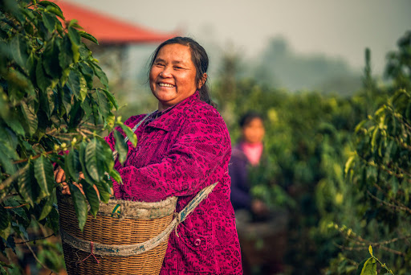

Lot A01 | Yunnan Honey Process
Origin Story
In Yunnan, many smallholder families have treated coffee as a long-term livelihood, not a side crop. This honey-process lot reflects careful cherry selection and patient drying decisions made lot by lot.
The cup profile shows bright stone fruit, cocoa sweetness, and a clean finish. For these households, quality is directly tied to income stability across the year.
"Coffee is our family's work and pride. Better quality means a better year at home."
Current Bid: $18.50/lb
Ends in: